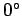
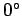

Inhalt Index DeskTop Bronstein

 Geometrie Sphärische Trigonometrie Berechnung sphärischer Dreiecke
Geometrie Sphärische Trigonometrie Berechnung sphärischer Dreiecke


Die verschiedenen Fälle, die bei der Berechnung sphärischer Dreiecke auftreten können, werden in sogenannte Grundaufgaben eingeordnet. Für jede Grundaufgabe des schiefwinklig sphärischen Dreiecks sind mehrere Lösungswege möglich, je nachdem, ob die Lösung nur mit den Grundformeln (3.191a) bis (3.195b) oder auch mit den Formeln (3.196a) bis (3.205) erfolgt und ob nur eine Größe im Dreieck oder mehrere Größen gesucht sind.
Formeln, die die Tangensfunktion enthalten, liefern numerisch genauere Ergebnisse, besonders im Vergleich zur Berechnung eines Bestimmungsstückes aus der Sinusfunktion, wenn dessen Wert in der Nähe von  liegt, und aus der Kosinusfunktion, wenn der Wert des Bestimmungsstückes in der Nähe von  oder
liegt, und aus der Kosinusfunktion, wenn der Wert des Bestimmungsstückes in der Nähe von  oder  liegt. Für EULERsche Dreiecke ergeben sich außerdem die aus der Sinusfunktion berechneten Stücke zweideutig, da die Sinusfunktion in den beiden ersten Quadranten positiv ist, während die aus den übrigen Funktionen berechneten Stücke eindeutig erhalten werden.
liegt. Für EULERsche Dreiecke ergeben sich außerdem die aus der Sinusfunktion berechneten Stücke zweideutig, da die Sinusfunktion in den beiden ersten Quadranten positiv ist, während die aus den übrigen Funktionen berechneten Stücke eindeutig erhalten werden.